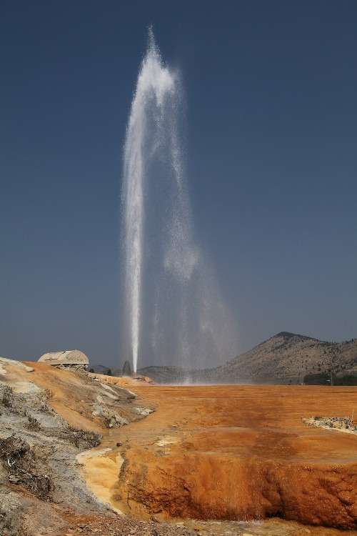

Preston Idaho
Weather Summary
Currently:
Current temp: 61℉
Wind Chill:
Humidity: %
Wind speed: 6mph
Five Day Forecast
Monday

69°F
Tuesday
69°F
Wednesday
69°F
Thursday
69°F
Friday
69°F
City Parks
The City of Soda Springs offers five beautiful parks with playground equipment, baseball diamonds, tennis courts, basketball courts, sand volleyball courts, a youth fishing pond and acres of hiking trails and a frisbee golf course surrounded by beautiful creeks, wildlife and scenery. The pavilions at City Park, Hooper Park, Kelly Park and Octagon Park can be reserved for your gathering. Other areas at all other parks are available on a first come, first serve basis. Sports facilities including baseball fields and basketball courts are also available on a first come, first serve basis with a few exceptions. The baseball fields and soccer fields at Kelly Park and City Park are home fields for the City Recreation Leagues. These fields must be vacated for scheduled league games. You must keep your dog on leash. Some people prefer to not be approached by even the nicest dog. Dogs are excited and unpredictable when meeting other dogs and children. Remember that you are ultimately responsible for the actions of your pet. Be cautious and in control at all times. Also, please clean up after your best friend. You may think it’s not that important, but what if everyone walking dogs felt the same way? Soon our streets and parks would be covered in you-know-what. Use a plastic bag to cover your hand, pick up the offending matter, turn the bag inside out so the waste is securely inside it, tie up the bag and toss it in a trash can. We also encourage you to keep your dog away from the trash cans, so he is not tempted to come back later and tip it for a midnight snack. Thank you in advance for helping to keep your City parks clean and pet accessible.